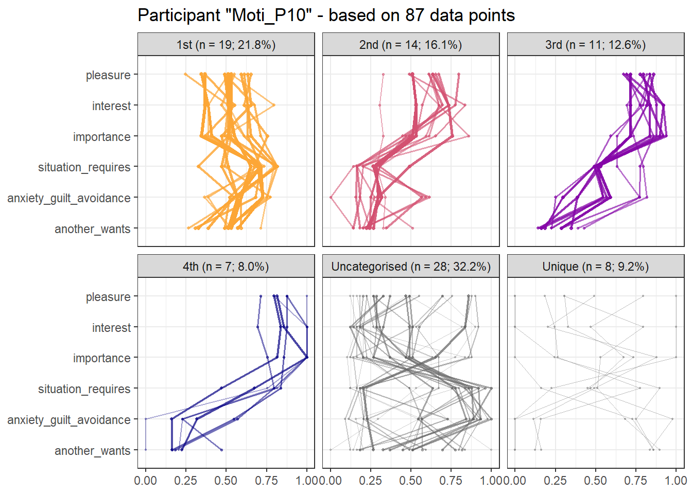
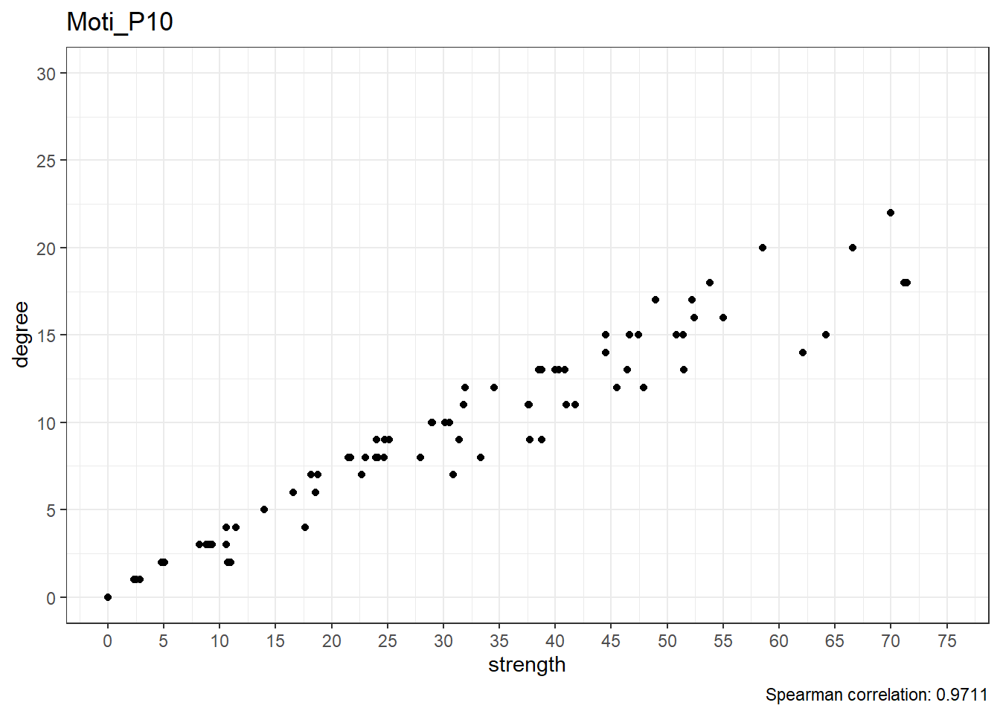
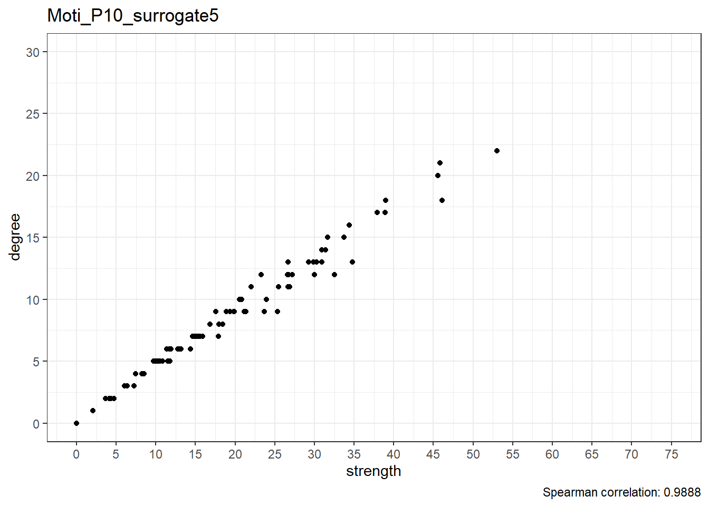
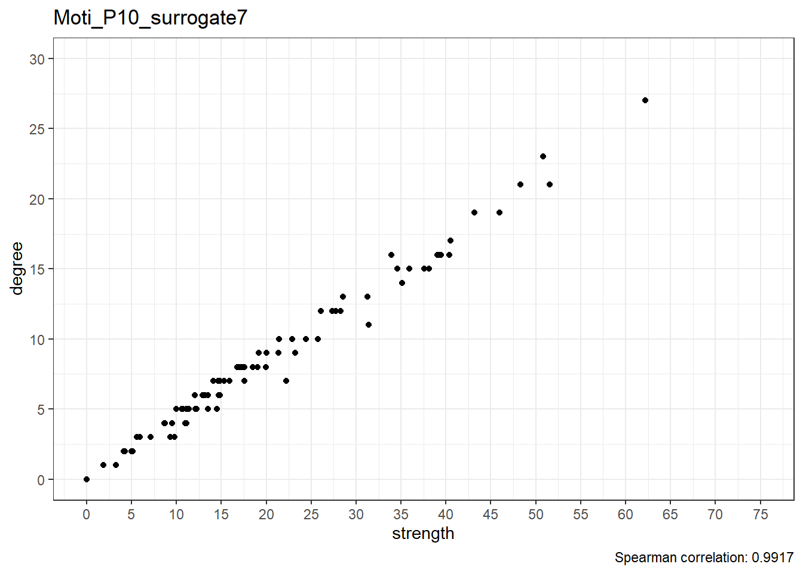
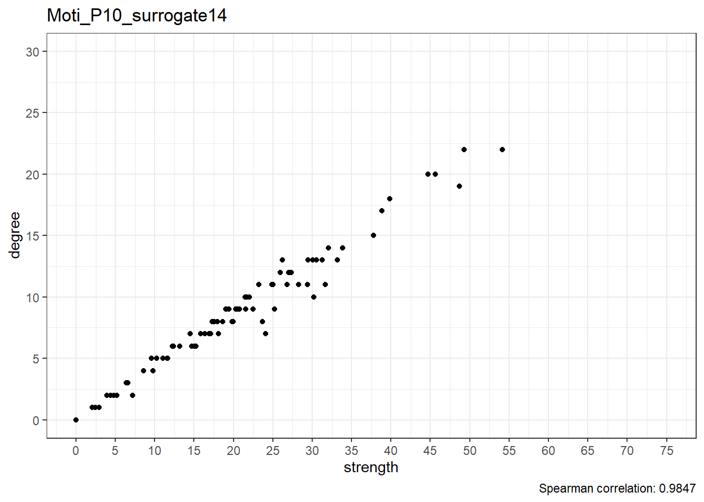
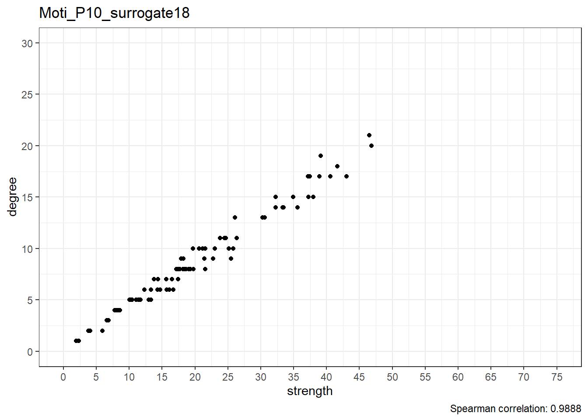

Surrogate data analysis
This document presents an investigation into how the results differ from patterns derived from random data.
Some code involving data preprocessing is omitted here for clarity of presentation. It can be found in the source code for this document, here.
Here is the figure depicting the attractor patterns found in the main analysis:

Surrogate data analysis
Surrogate data analysis is a method for testing hypotheses about temporal structure in time series data. We use the Amplitude Adjusted Fourier Transform to create surrogate data. This data is a transformation of the original time series; a shuffled version, which in the case of Amplitude Adjusted Fourier Transform also attempts to preserve certain properties such as the original autocorrelation function while destroying any non-linear temporal structure.
Hence, the surrogates represent the hypothesis that the data were generated by a rescaled Gaussian linear process. This means that, by analysing the surrogates, we ask whether the data can be understood to have arisen from a process, that is essentially stochastic and linear instead of highly interdependent and non-linear.
Comparing surrogates to observed data
The next figure depicts the minimums and maximums of the previous figure as bounds for the attractors. Overlaid in grey are the results where the same analysis has been applied to the 19 surrogate participants (i.e. the original data shuffled while retaining some linear properties such as autocovariance).
Our classification rule categorises any pattern which could belong to several attractors, as belonging to the strongest one – hence there are more classified as the first than the second, more in second than the third, and so on. We can readily observe, that the grey lines do not match the bounds very well. This means that the original attractors are not commonly observed in data without non-linear structure.
Each of the 19 surrogate participants have 87 configurations (i.e. time points) of six variables, making the total number of grey lines 1653.
minmax_test <- emadata_nested_wrangled_both_recnets_nodes_plots %>%
dplyr::mutate(minmax = purrr::map(.x = all_nodes_with_strengths,
.f = ~.x %>%
dplyr::group_by(name, attractors) %>%
dplyr::mutate(min_or_max = dplyr::case_when(value == min(value) ~ "mini",
value == max(value) ~ "maxi")) %>%
dplyr::select(name, value, min_or_max, attractors) %>%
dplyr::filter(!is.na(min_or_max)) %>%
dplyr::distinct(value, .keep_all = TRUE) %>%
dplyr::ungroup() %>%
tidyr::pivot_wider(names_from = min_or_max,
values_from = value) %>%
dplyr::arrange(attractors, name)))
datalists <- emadata_nested_wrangled_both_recnets_nodes_plots$all_nodes_with_strengths[2:nrow(emadata_nested_wrangled_both_recnets_nodes_plots)]
surrogate_data <-
purrr::imap(.x = datalists, ~dplyr::mutate(.x,
case = .y,
time_case = paste0(time, "_", .y)) %>%
dplyr::group_by(attractors) %>%
dplyr::filter(strength == max(strength)) %>%
dplyr::ungroup()) %>%
dplyr::bind_rows()
surrogate_data_all <-
purrr::imap(.x = datalists, ~dplyr::mutate(.x,
case = .y,
time_case = paste0(time, "_", .y))) %>%
dplyr::bind_rows()
minmax_test$minmax[[1]] %>%
ggplot(aes(x = forcats::fct_rev(name),
color = attractors,
group = attractors)) +
geom_ribbon(data = minmax_test$minmax[[1]],
aes(ymin = mini,
ymax = maxi,
fill = attractors),
alpha = 1) +
geom_line(data = surrogate_data_all,
# combined_data %>%
# tidyr::pivot_longer(cols = c(interest, pleasure, importance,
# situation_requires, anxiety_guilt_avoidance, another_wants)) %>%
# dplyr::filter(within_bounds == "Surrogates within bounds"),
aes(y = value,
x = forcats::fct_rev(name),
group = time_case),
alpha = 0.05,
size = 0.75,
colour = "grey") +
scale_fill_manual(values = c(viridisLite::plasma(4,
end = 0.8,
direction = -1),
"gray40", "gray50")) +
scale_color_manual(values = c(viridisLite::plasma(4,
end = 0.8,
direction = -1),
"gray40", "gray50")) +
# geom_point(data = surrogate_data_all %>% dplyr::filter(time_case == "45_1") %>%
# dplyr::mutate(attractors = as.character("4th")),
# aes(x = forcats::fct_rev(name),
# y = value,
# size = 2,
# alpha = 1),
# shape = 8,
# colour = "black") +
coord_flip(ylim = c(0, 1)) +
theme_bw() +
theme(legend.position = "none") +
labs(y = NULL,
x = NULL) +
facet_wrap(~attractors)
df_minmax <- minmax_test$minmax[[1]] %>%
dplyr::group_by(attractors) %>%
tidyr::nest() %>%
dplyr::mutate(data = purrr::map2(.x = data,
.y = attractors,
.f = ~.x %>%
setNames(paste0(names(.), "_", .y))))
real_data_bounds <- dplyr::bind_cols(df_minmax$data)
# real_data_bounds %>% dplyr::select_if(is.numeric)In the next table, these results are quantified. Recall that each pattern is clustered within the “surrogate person”. Some number of these configurations fit within the bounds of each of the attractors derived from the original data: If this number significantly differs from the numbers observed in the real data, we can infer that the observed configurations tap into non-linear temporal structure instead of randomness alone.
surrogate_data_all_cleaned <- surrogate_data_all %>%
dplyr::select(time, name, value, case, time_case, attractors, strength) %>%
tidyr::pivot_wider(names_from = name,
values_from = value)
real_data <- minmax_test$minmax[[1]] %>%
tidyr::pivot_wider(names_from = name,
values_from = c(mini, maxi),
)
combined_data <- dplyr::full_join(surrogate_data_all_cleaned, real_data, by = "attractors") %>%
rowwise() %>%
dplyr::mutate(within_bounds = dplyr::case_when(pleasure <= maxi_pleasure &
pleasure >= mini_pleasure &
interest <= maxi_interest &
interest >= mini_interest &
importance <= maxi_importance &
importance >= mini_importance &
situation_requires <= maxi_situation_requires &
situation_requires >= mini_situation_requires &
anxiety_guilt_avoidance <= maxi_anxiety_guilt_avoidance &
anxiety_guilt_avoidance >= mini_anxiety_guilt_avoidance &
another_wants <= maxi_another_wants &
another_wants >= mini_another_wants ~ "Surrogates within bounds",
TRUE ~ "Surrogates out of bounds")) %>%
dplyr::ungroup()
attractor_prevalence_table_1 <- surrogate_data_all %>%
# dplyr::group_by(attractors) %>%
dplyr::count(attractors,
name = "n in surrogates") %>%
dplyr::mutate(`Proportion in surrogates` = (`n in surrogates`/sum(`n in surrogates`)) %>%
round(., digits = 2))
attractor_prevalence_table2 <- emadata_nested_wrangled_both_recnets_nodes_plots$all_nodes_with_strengths[[1]] %>%
tidyr::pivot_wider(names_from = name,
values_from = value) %>%
dplyr::count(attractors, name = "n in real data") %>%
dplyr::mutate(`Proportion in real data` = (`n in real data`/sum(`n in real data`)) %>%
round(., digits = 2)) %>%
dplyr::select(-attractors)
# dplyr::bind_cols(attractor_prevalence_table_1, attractor_prevalence_table2) %>%
# knitr::kable()
surrogate_data_all_cleaned <- surrogate_data_all %>%
dplyr::select(time, name, value, case, time_case, attractors, strength) %>%
tidyr::pivot_wider(names_from = name,
values_from = value)
real_data <- minmax_test$minmax[[1]] %>%
tidyr::pivot_wider(names_from = name,
values_from = c(mini, maxi),
)
########## MINMAX table with proportions of patterns in attractors, compared to real data
# surrogate_data_all %>%
# dplyr::group_by(attractors, case) %>%
# tidyr::pivot_wider(names_from = name,
# values_from = value) %>%
# dplyr::summarise(`n in surrogates` = n()) %>%
# dplyr::group_by(case) %>%
# dplyr::mutate(`Proportion in surrogates` = (`n in surrogates`/sum(`n in surrogates`)) %>%
# round(., digits = 2)) %>%
# dplyr::group_by(attractors) %>%
# dplyr::summarise(`Min proportion in surrogates`= min(`Proportion in surrogates`),
# `Max proportion in surrogates`= max(`Proportion in surrogates`)) %>%
# dplyr::bind_cols(., attractor_prevalence_table2) %>%
# knitr::kable()Table below shows, how many of the surrogate configurations would fit the bounds of each observed attractor. The results give credence to the proposal that the attractors observed in real data (first row) indeed tap into temporal information in the time series.
df <- emadata_nested_wrangled_both_recnets_nodes_plots %>%
dplyr::mutate(patterns = purrr::map(.x = data_firstlast_divided_by_max,
.f = ~.x %>%
dplyr::mutate(time = dplyr::row_number()) %>%
tidyr::pivot_longer(cols = -time) %>%
tidyr::pivot_wider(names_from = time,
values_from = value)),
real_data_bounds = rep(list(real_data_bounds %>% dplyr::select_if(is.numeric)),
nrow(emadata_nested_wrangled_both_recnets_nodes_plots)),
) %>%
dplyr::select(User, real_data_bounds, patterns)
df_attractors_within_bounds <- df %>%
dplyr::mutate(inside_1st = purrr::map2_dbl(.x = real_data_bounds,
.y = patterns,
.f = ~as_tibble(.x[["maxi_1st"]] >= .y &
.x[["mini_1st"]] <= .y) %>%
# Result is a vector of 6 TRUE/FALSE values per timepoint
dplyr::summarise(across(.cols = -name,
~all(.))) %>%
# Result is just one value per timepoint, TRUE if all within bounds
tidyr::pivot_longer(cols = everything()) %>%
# Result is a data frame with columns for timepoint and TRUE/FALSE value
dplyr::summarise(n = sum(value)) %>%
dplyr::pull(n)),
inside_2nd = purrr::map2_dbl(.x = real_data_bounds,
.y = patterns,
.f = ~as_tibble(.x[["maxi_2nd"]] >= .y &
.x[["mini_2nd"]] <= .y) %>%
# Result is a vector of 6 TRUE/FALSE values per timepoint
dplyr::summarise(across(.cols = -name,
~all(.))) %>%
# Result is just one value per timepoint, TRUE if all within bounds
tidyr::pivot_longer(cols = everything()) %>%
# Result is a data frame with columns for timepoint and TRUE/FALSE value
dplyr::summarise(n = sum(value)) %>%
dplyr::pull(n)),
inside_3rd = purrr::map2_dbl(.x = real_data_bounds,
.y = patterns,
.f = ~as_tibble(.x[["maxi_3rd"]] >= .y &
.x[["mini_3rd"]] <= .y) %>%
# Result is a vector of 6 TRUE/FALSE values per timepoint
dplyr::summarise(across(.cols = -name,
~all(.))) %>%
# Result is just one value per timepoint, TRUE if all within bounds
tidyr::pivot_longer(cols = everything()) %>%
# Result is a data frame with columns for timepoint and TRUE/FALSE value
dplyr::summarise(n = sum(value)) %>%
dplyr::pull(n)),
inside_4th = purrr::map2_dbl(.x = real_data_bounds,
.y = patterns,
.f = ~as_tibble(.x[["maxi_4th"]] >= .y &
.x[["mini_4th"]] <= .y) %>%
# Result is a vector of 6 TRUE/FALSE values per timepoint
dplyr::summarise(across(.cols = -name,
~all(.))) %>%
# Result is just one value per timepoint, TRUE if all within bounds
tidyr::pivot_longer(cols = everything()) %>%
# Result is a data frame with columns for timepoint and TRUE/FALSE value
dplyr::summarise(n = sum(value)) %>%
dplyr::pull(n)),
inside_Uncategorised = purrr::map2_dbl(.x = real_data_bounds,
.y = patterns,
.f = ~as_tibble(.x[["maxi_Uncategorised"]] >= .y &
.x[["mini_Uncategorised"]] <= .y) %>%
# Result is a vector of 6 TRUE/FALSE values per timepoint
dplyr::summarise(across(.cols = -name,
~all(.))) %>%
# Result is just one value per timepoint, TRUE if all within bounds
tidyr::pivot_longer(cols = everything()) %>%
# Result is a data frame with columns for timepoint and TRUE/FALSE value
dplyr::summarise(n = sum(value)) %>%
dplyr::pull(n)),
inside_Unique = purrr::map2_dbl(.x = real_data_bounds,
.y = patterns,
.f = ~as_tibble(.x[["maxi_Unique"]] >= .y &
.x[["mini_Unique"]] <= .y) %>%
# Result is a vector of 6 TRUE/FALSE values per timepoint
dplyr::summarise(across(.cols = -name,
~all(.))) %>%
# Result is just one value per timepoint, TRUE if all within bounds
tidyr::pivot_longer(cols = everything()) %>%
# Result is a data frame with columns for timepoint and TRUE/FALSE value
dplyr::summarise(n = sum(value)) %>%
dplyr::pull(n)))
attractor_table_per_person <- df_attractors_within_bounds %>%
dplyr::select(-real_data_bounds,
-patterns,
-inside_Uncategorised,
-inside_Unique)
attractor_table_per_person %>%
knitr::kable()| User | inside_1st | inside_2nd | inside_3rd | inside_4th |
|---|---|---|---|---|
| Moti_P10 | 19 | 18 | 11 | 10 |
| Moti_P10_surrogate1 | 2 | 8 | 1 | 0 |
| Moti_P10_surrogate2 | 3 | 5 | 1 | 0 |
| Moti_P10_surrogate3 | 4 | 7 | 2 | 1 |
| Moti_P10_surrogate4 | 2 | 6 | 0 | 0 |
| Moti_P10_surrogate5 | 1 | 4 | 2 | 1 |
| Moti_P10_surrogate6 | 1 | 6 | 1 | 0 |
| Moti_P10_surrogate7 | 2 | 6 | 1 | 0 |
| Moti_P10_surrogate8 | 0 | 3 | 0 | 0 |
| Moti_P10_surrogate9 | 1 | 4 | 1 | 1 |
| Moti_P10_surrogate10 | 4 | 9 | 0 | 0 |
| Moti_P10_surrogate11 | 4 | 6 | 2 | 0 |
| Moti_P10_surrogate12 | 1 | 5 | 0 | 0 |
| Moti_P10_surrogate13 | 0 | 8 | 0 | 0 |
| Moti_P10_surrogate14 | 1 | 3 | 0 | 1 |
| Moti_P10_surrogate15 | 2 | 6 | 1 | 2 |
| Moti_P10_surrogate16 | 2 | 4 | 0 | 0 |
| Moti_P10_surrogate17 | 4 | 4 | 0 | 0 |
| Moti_P10_surrogate18 | 2 | 7 | 0 | 1 |
| Moti_P10_surrogate19 | 0 | 9 | 0 | 0 |
Taking the averages of the columns above, excluding the real data (first row), we can observe the following:
attractor_table_summary <- attractor_table_per_person %>%
dplyr::filter(stringr::str_detect(string = User,
pattern = "surrogate")) %>%
dplyr::summarise(across(where(is.numeric), ~mean(.) %>% round(., digits = 3)))
attractor_table_summary %>% knitr::kable()| inside_1st | inside_2nd | inside_3rd | inside_4th |
|---|---|---|---|
| 1.895 | 5.789 | 0.632 | 0.368 |
We find that, for example, on average 1.895 out of 87 surrogate time points would depict a pattern where all 6 values fit within the bounds of what was identified as the first attractor.
To gain insight into why this happens, we can examine the radius which defines whether a value is deemed “recurring” or not in the recurrence plot. We chose this radius such, that 10% of the points on the plot recur. In the figure below, we can observe that when the same analysis is conducted on data stripped of non-linear structure, the radius required to achieve the aforementioned recurrence rate is vastly larger.
purrr::map(emadata_nested_wrangled_both_recnets$RN,
~ base::attr(., "emRad") %>%
tibble::as_tibble()) %>%
dplyr::bind_rows() %>%
dplyr::mutate(User = emadata_nested_wrangled_both_recnets$User,
surrogate = dplyr::case_when(stringr::str_detect(
string = User,
pattern = "surrogate") ~ "Surrogate datasets",
TRUE ~ "Real dataset")) %>%
ggplot(aes(y = value,
x = User)) +
geom_point() +
geom_segment(aes(y = 0,
x = User,
yend = value,
xend = User),
color = "black") +
# geom_vline(xintercept = 1.5) +
theme_bw() +
labs(x = NULL,
y = NULL,
title = paste0("Radius required to produce ", scales::percent(recurrence_rate), " recurrence rate")) +
theme(panel.grid.minor.x = element_blank(),
panel.grid.major.x = element_blank(),
axis.ticks.x = element_blank(),
axis.text.x = element_blank()) +
facet_grid(~surrogate, scales = "free_x") # facet_wrap(~surrogate)
Strength vs. degree
It is also interesting to examine, whether the relationship between node degree (i.e. how many times the configuration at a particular time point is deemed to recur) and strength centrality. Strength centrality in this context means a node’s degree weighted by the configuration’s similarity to those states it’s deemed recurrent with.
strength_degree <- emadata_nested_wrangled_both_recnets_nodes_plots %>%
dplyr::mutate(strength_degree_data = purrr::map(.x = all_nodes_with_strengths,
.f = ~.x %>%
dplyr::group_by(time) %>%
dplyr::slice(1) %>%
dplyr::ungroup() %>%
dplyr::select(strength,
degree)),
spearman_strength_degree = purrr::map(.x = strength_degree_data,
.f= ~cor(.x, method = "pearson")[2] %>%
round(., digits = 4)))
strength_degree %>%
dplyr::select(User, spearman_strength_degree) %>%
dplyr::mutate(spearman_strength_degree = purrr::map_dbl(.x = spearman_strength_degree,
.f = ~.x)) %>%
dplyr::mutate(surrogate = dplyr::case_when(stringr::str_detect(string = User,
pattern = "surrogate") ~ "Surrogate datasets",
TRUE ~ "Real dataset")) %>%
ggplot(aes(y = spearman_strength_degree,
x = User)) +
geom_point() +
geom_segment(aes(y = 0.95,
x = User,
yend = spearman_strength_degree,
xend = User),
color = "black") +
# geom_vline(xintercept = 1.5) +
theme_bw() +
labs(x = NULL,
y = NULL,
title = "Spearman correlation between strength centrality and node degree",
caption = NULL) +
theme(panel.grid.minor.x = element_blank(),
panel.grid.major.x = element_blank(),
axis.ticks.x = element_blank(),
axis.text.x = element_blank()) +
facet_grid(~surrogate, scales = "free_x")
We can observe that the correlation between degree and strength centrality is the lowest in real data; with 19 surrogates, if all data was random, this would only happen 1/20 (i.e. 5%) of the time, which can be considered as the p-value of this test.
Scatterplots
Below are scatterplots of node degree and node strength.
Real data
maxdegree <- dplyr::bind_rows(strength_degree$strength_degree_data) %>%
dplyr::summarise(across(everything(), max)) %>%
dplyr::pull(degree)
maxstrength <- dplyr::bind_rows(strength_degree$strength_degree_data) %>%
dplyr::summarise(across(everything(), max)) %>%
dplyr::pull(strength)
strength_degree <- strength_degree %>%
dplyr::mutate(strength_degree_plot = purrr::pmap(list(..1 = strength_degree_data,
..2 = User,
..3 = spearman_strength_degree),
.f = ~.x %>%
ggplot(aes(x = strength,
y = degree)) +
geom_point() +
theme_bw() +
coord_cartesian(xlim = c(0, ceiling(maxstrength/5)*5),
ylim = c(0, ceiling(maxdegree/5)*5)) +
scale_y_continuous(breaks = seq(from = 0,
to = ceiling(maxdegree/5)*5,
by = 5)) +
scale_x_continuous(breaks = seq(from = 0,
to = ceiling(maxstrength/5)*5,
by = 5)) +
labs(title = ..2,
caption = paste0("Spearman correlation: ", ..3))))
userlist <- emadata_nested_wrangled_both_recnets_nodes_plots %>%
dplyr::filter(stringr::str_detect(string = User,
pattern = "surrogate")) %>%
dplyr::pull(User)
#### Show non-surrogate plot
show(strength_degree[!emadata_nested_wrangled_both_recnets_nodes_plots$User %in% userlist, ]$strength_degree_plot[[1]])
Surrogate data
#### Show the rest of the plots in tabset
for(i in userlist){
cat('\n\n###', i, '\n\n ')
show(strength_degree[emadata_nested_wrangled_both_recnets_nodes_plots$User == i, ]$strength_degree_plot[[1]])
}Moti_P10_surrogate1
Moti_P10_surrogate2

Moti_P10_surrogate3
Moti_P10_surrogate4
Moti_P10_surrogate5

Moti_P10_surrogate6
Moti_P10_surrogate7

Moti_P10_surrogate8
Moti_P10_surrogate9
Moti_P10_surrogate10

Moti_P10_surrogate11
Moti_P10_surrogate12

Moti_P10_surrogate13

Moti_P10_surrogate14

Moti_P10_surrogate15
Moti_P10_surrogate16
Moti_P10_surrogate17

Moti_P10_surrogate18

Moti_P10_surrogate19
\(~\)
Session information
Description of the R environment can be found below.
devtools::session_info()
## - Session info -------------
## setting
## version
## os
## system
## ui
## language
## collate
## ctype
## tz
## date
## value
## R version 4.0.5 (2021-03-31)
## Windows 10 x64
## x86_64, mingw32
## RStudio
## (EN)
## Finnish_Finland.1252
## Finnish_Finland.1252
## Europe/Helsinki
## 2021-05-19
##
## - Packages -----------------
## package *
## abind
## assertthat
## backports
## base64enc
## BiocManager
## bookdown *
## brainGraph
## broom
## bslib
## cachem
## callr
## casnet
## cellranger
## checkmate
## cli
## cluster
## codetools
## colorspace
## corpcor
## cowplot
## crayon
## crosstalk
## curl
## data.table
## DBI
## dbplyr
## desc
## devtools
## digest
## DirectedClustering
## doParallel
## dplyr *
## DT
## ellipsis
## evaluate
## fansi
## farver
## fastmap
## fdrtool
## forcats *
## foreach
## forecast
## foreign
## Formula
## fracdiff
## fs
## generics
## ggimage
## ggplot2 *
## ggplotify
## glasso
## glue
## gridExtra
## gridGraphics
## gtable
## gtools
## haven
## highr
## Hmisc
## hms
## htmlTable
## htmltools
## htmlwidgets
## httpuv
## httr
## igraph
## invctr
## iterators
## jpeg
## jquerylib
## jsonlite
## knitr *
## labeling
## later
## lattice
## latticeExtra
## lavaan
## leaps
## lifecycle
## lmtest
## locfit
## lubridate
## magick
## magrittr
## MASS
## Matrix
## memoise
## mgcv
## mime
## mnormt
## modelr
## munsell
## nlme
## nnet
## pander
## patchwork *
## pbapply
## pbivnorm
## permute
## pillar
## pkgbuild
## pkgconfig
## pkgload
## plyr
## png
## prettyunits
## processx
## promises
## proxy
## ps
## psych
## purrr *
## qgraph
## quadprog
## quantmod
## R6
## randtests
## RColorBrewer
## Rcpp
## readr *
## readxl
## remotes
## reprex
## reshape2
## rlang
## rmarkdown
## rpart
## rprojroot
## rstudioapi
## rvcheck
## rvest
## sass
## scales
## sessioninfo
## shiny *
## stabledist
## stringi
## stringr *
## survival
## testthat
## tibble *
## tidyr *
## tidyselect
## tidyverse *
## timeDate
## tmvnsim
## TSA
## tseries
## TTR
## urca
## usethis
## utf8
## vctrs
## viridisLite
## withr
## xfun
## xml2
## xtable
## xts
## yaml
## zoo
## version date lib
## 1.4-5 2016-07-21 [1]
## 0.2.1 2019-03-21 [1]
## 1.2.1 2020-12-09 [1]
## 0.1-3 2015-07-28 [1]
## 1.30.12 2021-03-28 [1]
## 0.21 2020-10-13 [1]
## 3.0.0 2020-09-29 [1]
## 0.7.6.9001 2021-04-19 [1]
## 0.2.4 2021-01-25 [1]
## 1.0.4 2021-02-13 [1]
## 3.6.0 2021-03-28 [1]
## 0.1.6 2021-05-17 [1]
## 1.1.0 2016-07-27 [1]
## 2.0.0 2020-02-06 [1]
## 2.4.0 2021-04-05 [1]
## 2.1.1 2021-02-14 [2]
## 0.2-18 2020-11-04 [2]
## 2.0-0 2020-11-11 [1]
## 1.6.9 2017-04-01 [1]
## 1.1.1 2020-12-30 [1]
## 1.4.1 2021-02-08 [1]
## 1.1.1 2021-01-12 [1]
## 4.3 2019-12-02 [1]
## 1.14.0 2021-02-21 [1]
## 1.1.1 2021-01-15 [1]
## 2.1.1 2021-04-06 [1]
## 1.3.0 2021-03-05 [1]
## 2.4.0 2021-04-07 [1]
## 0.6.27 2020-10-24 [1]
## 0.1.1 2018-01-11 [1]
## 1.0.16 2020-10-16 [1]
## 1.0.5 2021-03-05 [1]
## 0.18 2021-04-14 [1]
## 0.3.1 2020-05-15 [1]
## 0.14 2019-05-28 [1]
## 0.4.2 2021-01-15 [1]
## 2.1.0 2021-02-28 [1]
## 1.1.0 2021-01-25 [1]
## 1.2.16 2021-01-06 [1]
## 0.5.1 2021-01-27 [1]
## 1.5.1 2020-10-15 [1]
## 8.14 2021-03-11 [1]
## 0.8-81 2020-12-22 [2]
## 1.2-4 2020-10-16 [1]
## 1.5-1 2020-01-24 [1]
## 1.5.0 2020-07-31 [1]
## 0.1.0 2020-10-31 [1]
## 0.2.8 2020-04-02 [1]
## 3.3.3 2020-12-30 [1]
## 0.0.5 2020-03-12 [1]
## 1.11 2019-10-01 [1]
## 1.4.2 2020-08-27 [1]
## 2.3 2017-09-09 [1]
## 0.5-1 2020-12-13 [1]
## 0.3.0 2019-03-25 [1]
## 3.8.2 2020-03-31 [1]
## 2.3.1 2020-06-01 [1]
## 0.9 2021-04-16 [1]
## 4.5-0 2021-02-28 [1]
## 1.0.0 2021-01-13 [1]
## 2.1.0 2020-09-16 [1]
## 0.5.1.1 2021-01-22 [1]
## 1.5.3 2020-12-10 [1]
## 1.5.5 2021-01-13 [1]
## 1.4.2 2020-07-20 [1]
## 1.2.6 2020-10-06 [1]
## 0.1.0 2019-03-07 [1]
## 1.0.13 2020-10-15 [1]
## 0.1-8.1 2019-10-24 [1]
## 0.1.3 2020-12-17 [1]
## 1.7.2 2020-12-09 [1]
## 1.32 2021-04-14 [1]
## 0.4.2 2020-10-20 [1]
## 1.1.0.1 2020-06-05 [1]
## 0.20-41 2020-04-02 [2]
## 0.6-29 2019-12-19 [1]
## 0.6-8 2021-03-10 [1]
## 3.1 2020-01-16 [1]
## 1.0.0 2021-02-15 [1]
## 0.9-38 2020-09-09 [1]
## 1.5-9.4 2020-03-25 [1]
## 1.7.10 2021-02-26 [1]
## 2.7.1 2021-03-20 [1]
## 2.0.1 2020-11-17 [1]
## 7.3-53.1 2021-02-12 [2]
## 1.3-2 2021-01-06 [2]
## 2.0.0 2021-01-26 [1]
## 1.8-34 2021-02-16 [2]
## 0.10 2021-02-13 [1]
## 2.0.2 2020-09-01 [1]
## 0.1.8 2020-05-19 [1]
## 0.5.0 2018-06-12 [1]
## 3.1-152 2021-02-04 [2]
## 7.3-15 2021-01-24 [2]
## 0.6.3 2018-11-06 [1]
## 1.1.1 2020-12-17 [1]
## 1.4-3 2020-08-18 [1]
## 0.6.0 2015-01-23 [1]
## 0.9-5 2019-03-12 [1]
## 1.6.0 2021-04-13 [1]
## 1.2.0 2020-12-15 [1]
## 2.0.3 2019-09-22 [1]
## 1.2.1 2021-04-06 [1]
## 1.8.6 2020-03-03 [1]
## 0.1-7 2013-12-03 [1]
## 1.1.1 2020-01-24 [1]
## 3.5.1 2021-04-04 [1]
## 1.2.0.1 2021-02-11 [1]
## 0.4-25 2021-03-05 [1]
## 1.6.0 2021-02-28 [1]
## 2.1.3 2021-03-27 [1]
## 0.3.4 2020-04-17 [1]
## 1.6.9 2021-01-28 [1]
## 1.5-8 2019-11-20 [1]
## 0.4.18 2020-12-09 [1]
## 2.5.0 2020-10-28 [1]
## 1.0 2014-11-17 [1]
## 1.1-2 2014-12-07 [1]
## 1.0.6 2021-01-15 [1]
## 1.4.0 2020-10-05 [1]
## 1.3.1 2019-03-13 [1]
## 2.3.0 2021-04-01 [1]
## 2.0.0 2021-04-02 [1]
## 1.4.4 2020-04-09 [1]
## 0.4.10 2020-12-30 [1]
## 2.7 2021-02-19 [1]
## 4.1-15 2019-04-12 [2]
## 2.0.2 2020-11-15 [1]
## 0.13 2020-11-12 [1]
## 0.1.8 2020-03-01 [1]
## 1.0.0 2021-03-09 [1]
## 0.3.1 2021-01-24 [1]
## 1.1.1 2020-05-11 [1]
## 1.1.1 2018-11-05 [1]
## 1.6.0 2021-01-25 [1]
## 0.7-1 2016-09-12 [1]
## 1.5.3 2020-09-09 [1]
## 1.4.0 2019-02-10 [1]
## 3.2-10 2021-03-16 [2]
## 3.0.2 2021-02-14 [1]
## 3.1.1 2021-04-18 [1]
## 1.1.3 2021-03-03 [1]
## 1.1.0 2020-05-11 [1]
## 1.3.1 2021-04-15 [1]
## 3043.102 2018-02-21 [1]
## 1.0-2 2016-12-15 [1]
## 1.3 2020-09-13 [1]
## 0.10-48 2020-12-04 [1]
## 0.24.2 2020-09-01 [1]
## 1.3-0 2016-09-06 [1]
## 2.0.1 2021-02-10 [1]
## 1.2.1 2021-03-12 [1]
## 0.3.7 2021-03-29 [1]
## 0.3.0 2018-02-01 [1]
## 2.4.2 2021-04-18 [1]
## 0.22 2021-03-11 [1]
## 1.3.2 2020-04-23 [1]
## 1.8-4 2019-04-21 [1]
## 0.12.1 2020-09-09 [1]
## 2.2.1 2020-02-01 [1]
## 1.8-9 2021-03-09 [1]
## source
## CRAN (R 4.0.3)
## CRAN (R 4.0.5)
## CRAN (R 4.0.3)
## CRAN (R 4.0.3)
## CRAN (R 4.0.5)
## CRAN (R 4.0.5)
## CRAN (R 4.0.5)
## Github (tidymodels/broom@0f4c1ca)
## CRAN (R 4.0.5)
## CRAN (R 4.0.5)
## CRAN (R 4.0.4)
## Github (fredhasselman/casnet@bb112ee)
## CRAN (R 4.0.5)
## CRAN (R 4.0.5)
## CRAN (R 4.0.4)
## CRAN (R 4.0.5)
## CRAN (R 4.0.5)
## CRAN (R 4.0.5)
## CRAN (R 4.0.3)
## CRAN (R 4.0.5)
## CRAN (R 4.0.5)
## CRAN (R 4.0.5)
## CRAN (R 4.0.5)
## CRAN (R 4.0.5)
## CRAN (R 4.0.5)
## CRAN (R 4.0.5)
## CRAN (R 4.0.5)
## CRAN (R 4.0.4)
## CRAN (R 4.0.5)
## CRAN (R 4.0.5)
## CRAN (R 4.0.5)
## CRAN (R 4.0.5)
## CRAN (R 4.0.5)
## CRAN (R 4.0.5)
## CRAN (R 4.0.5)
## CRAN (R 4.0.5)
## CRAN (R 4.0.5)
## CRAN (R 4.0.5)
## CRAN (R 4.0.3)
## CRAN (R 4.0.5)
## CRAN (R 4.0.5)
## CRAN (R 4.0.5)
## CRAN (R 4.0.5)
## CRAN (R 4.0.3)
## CRAN (R 4.0.5)
## CRAN (R 4.0.5)
## CRAN (R 4.0.5)
## CRAN (R 4.0.5)
## CRAN (R 4.0.5)
## CRAN (R 4.0.5)
## CRAN (R 4.0.3)
## CRAN (R 4.0.5)
## CRAN (R 4.0.5)
## CRAN (R 4.0.5)
## CRAN (R 4.0.5)
## CRAN (R 4.0.3)
## CRAN (R 4.0.5)
## CRAN (R 4.0.5)
## CRAN (R 4.0.5)
## CRAN (R 4.0.5)
## CRAN (R 4.0.5)
## CRAN (R 4.0.5)
## CRAN (R 4.0.5)
## CRAN (R 4.0.5)
## CRAN (R 4.0.5)
## CRAN (R 4.0.5)
## CRAN (R 4.0.5)
## CRAN (R 4.0.5)
## CRAN (R 4.0.3)
## CRAN (R 4.0.5)
## CRAN (R 4.0.5)
## CRAN (R 4.0.5)
## CRAN (R 4.0.3)
## CRAN (R 4.0.5)
## CRAN (R 4.0.5)
## CRAN (R 4.0.5)
## CRAN (R 4.0.5)
## CRAN (R 4.0.5)
## CRAN (R 4.0.5)
## CRAN (R 4.0.5)
## CRAN (R 4.0.5)
## CRAN (R 4.0.5)
## CRAN (R 4.0.5)
## CRAN (R 4.0.5)
## CRAN (R 4.0.5)
## CRAN (R 4.0.5)
## CRAN (R 4.0.5)
## CRAN (R 4.0.5)
## CRAN (R 4.0.4)
## CRAN (R 4.0.3)
## CRAN (R 4.0.5)
## CRAN (R 4.0.5)
## CRAN (R 4.0.5)
## CRAN (R 4.0.5)
## CRAN (R 4.0.5)
## CRAN (R 4.0.5)
## CRAN (R 4.0.3)
## CRAN (R 4.0.3)
## CRAN (R 4.0.5)
## CRAN (R 4.0.5)
## CRAN (R 4.0.5)
## CRAN (R 4.0.5)
## CRAN (R 4.0.4)
## CRAN (R 4.0.5)
## CRAN (R 4.0.3)
## CRAN (R 4.0.5)
## CRAN (R 4.0.5)
## CRAN (R 4.0.5)
## CRAN (R 4.0.5)
## CRAN (R 4.0.5)
## CRAN (R 4.0.5)
## CRAN (R 4.0.5)
## CRAN (R 4.0.5)
## CRAN (R 4.0.3)
## CRAN (R 4.0.5)
## CRAN (R 4.0.5)
## CRAN (R 4.0.3)
## CRAN (R 4.0.3)
## CRAN (R 4.0.4)
## CRAN (R 4.0.5)
## CRAN (R 4.0.5)
## CRAN (R 4.0.5)
## CRAN (R 4.0.5)
## CRAN (R 4.0.5)
## CRAN (R 4.0.5)
## CRAN (R 4.0.5)
## CRAN (R 4.0.5)
## CRAN (R 4.0.5)
## CRAN (R 4.0.5)
## CRAN (R 4.0.5)
## CRAN (R 4.0.5)
## CRAN (R 4.0.5)
## CRAN (R 4.0.5)
## CRAN (R 4.0.5)
## CRAN (R 4.0.5)
## CRAN (R 4.0.5)
## CRAN (R 4.0.3)
## CRAN (R 4.0.5)
## CRAN (R 4.0.5)
## CRAN (R 4.0.5)
## CRAN (R 4.0.5)
## CRAN (R 4.0.5)
## CRAN (R 4.0.5)
## CRAN (R 4.0.5)
## CRAN (R 4.0.4)
## CRAN (R 4.0.3)
## CRAN (R 4.0.5)
## CRAN (R 4.0.5)
## CRAN (R 4.0.5)
## CRAN (R 4.0.5)
## CRAN (R 4.0.5)
## CRAN (R 4.0.5)
## CRAN (R 4.0.5)
## CRAN (R 4.0.5)
## CRAN (R 4.0.5)
## CRAN (R 4.0.5)
## CRAN (R 4.0.5)
## CRAN (R 4.0.5)
## CRAN (R 4.0.5)
## CRAN (R 4.0.4)
## CRAN (R 4.0.5)
##
## [1] C:/rlibs/4.0.5
## [2] C:/Program Files/R/R-4.0.5/library
pander::pander(sessionInfo())R version 4.0.5 (2021-03-31)
Platform: x86_64-w64-mingw32/x64 (64-bit)
locale: LC_COLLATE=Finnish_Finland.1252, LC_CTYPE=Finnish_Finland.1252, LC_MONETARY=Finnish_Finland.1252, LC_NUMERIC=C and LC_TIME=Finnish_Finland.1252
attached base packages: stats, graphics, grDevices, utils, datasets, methods and base
other attached packages: patchwork(v.1.1.1), bookdown(v.0.21), knitr(v.1.32), shiny(v.1.6.0), forcats(v.0.5.1), stringr(v.1.4.0), dplyr(v.1.0.5), purrr(v.0.3.4), readr(v.1.4.0), tidyr(v.1.1.3), tibble(v.3.1.1), ggplot2(v.3.3.3) and tidyverse(v.1.3.1)
loaded via a namespace (and not attached): readxl(v.1.3.1), backports(v.1.2.1), Hmisc(v.4.5-0), plyr(v.1.8.6), igraph(v.1.2.6), splines(v.4.0.5), crosstalk(v.1.1.1), usethis(v.2.0.1), digest(v.0.6.27), foreach(v.1.5.1), casnet(v.0.1.6), htmltools(v.0.5.1.1), magick(v.2.7.1), fansi(v.0.4.2), magrittr(v.2.0.1), checkmate(v.2.0.0), memoise(v.2.0.0), cluster(v.2.1.1), doParallel(v.1.0.16), remotes(v.2.3.0), modelr(v.0.1.8), stabledist(v.0.7-1), xts(v.0.12.1), forecast(v.8.14), tseries(v.0.10-48), prettyunits(v.1.1.1), jpeg(v.0.1-8.1), colorspace(v.2.0-0), rvest(v.1.0.0), haven(v.2.3.1), xfun(v.0.22), callr(v.3.6.0), crayon(v.1.4.1), jsonlite(v.1.7.2), survival(v.3.2-10), zoo(v.1.8-9), iterators(v.1.0.13), glue(v.1.4.2), gtable(v.0.3.0), pkgbuild(v.1.2.0), DirectedClustering(v.0.1.1), quantmod(v.0.4.18), abind(v.1.4-5), scales(v.1.1.1), DBI(v.1.1.1), Rcpp(v.1.0.6), xtable(v.1.8-4), viridisLite(v.0.3.0), htmlTable(v.2.1.0), tmvnsim(v.1.0-2), gridGraphics(v.0.5-1), foreign(v.0.8-81), proxy(v.0.4-25), brainGraph(v.3.0.0), Formula(v.1.2-4), randtests(v.1.0), DT(v.0.18), stats4(v.4.0.5), htmlwidgets(v.1.5.3), httr(v.1.4.2), lavaan(v.0.6-8), RColorBrewer(v.1.1-2), ellipsis(v.0.3.1), pkgconfig(v.2.0.3), farver(v.2.1.0), sass(v.0.3.1), nnet(v.7.3-15), invctr(v.0.1.0), dbplyr(v.2.1.1), locfit(v.1.5-9.4), utf8(v.1.2.1), later(v.1.1.0.1), ggplotify(v.0.0.5), tidyselect(v.1.1.0), labeling(v.0.4.2), rlang(v.0.4.10), reshape2(v.1.4.4), munsell(v.0.5.0), cellranger(v.1.1.0), tools(v.4.0.5), cachem(v.1.0.4), cli(v.2.4.0), generics(v.0.1.0), devtools(v.2.4.0), broom(v.0.7.6.9001), fdrtool(v.1.2.16), evaluate(v.0.14), fastmap(v.1.1.0), yaml(v.2.2.1), processx(v.3.5.1), fs(v.1.5.0), pander(v.0.6.3), glasso(v.1.11), pbapply(v.1.4-3), nlme(v.3.1-152), mime(v.0.10), leaps(v.3.1), xml2(v.1.3.2), compiler(v.4.0.5), rstudioapi(v.0.13), curl(v.4.3), png(v.0.1-7), testthat(v.3.0.2), reprex(v.2.0.0), bslib(v.0.2.4), pbivnorm(v.0.6.0), stringi(v.1.5.3), ggimage(v.0.2.8), highr(v.0.9), ps(v.1.6.0), TSA(v.1.3), qgraph(v.1.6.9), desc(v.1.3.0), lattice(v.0.20-41), Matrix(v.1.3-2), psych(v.2.1.3), urca(v.1.3-0), permute(v.0.9-5), vctrs(v.0.3.7), pillar(v.1.6.0), lifecycle(v.1.0.0), BiocManager(v.1.30.12), lmtest(v.0.9-38), jquerylib(v.0.1.3), data.table(v.1.14.0), cowplot(v.1.1.1), corpcor(v.1.6.9), httpuv(v.1.5.5), R6(v.2.5.0), latticeExtra(v.0.6-29), promises(v.1.2.0.1), gridExtra(v.2.3), sessioninfo(v.1.1.1), codetools(v.0.2-18), gtools(v.3.8.2), MASS(v.7.3-53.1), assertthat(v.0.2.1), pkgload(v.1.2.1), rprojroot(v.2.0.2), withr(v.2.4.2), fracdiff(v.1.5-1), mnormt(v.2.0.2), mgcv(v.1.8-34), parallel(v.4.0.5), hms(v.1.0.0), timeDate(v.3043.102), quadprog(v.1.5-8), grid(v.4.0.5), rpart(v.4.1-15), rmarkdown(v.2.7), rvcheck(v.0.1.8), TTR(v.0.24.2), lubridate(v.1.7.10) and base64enc(v.0.1-3)